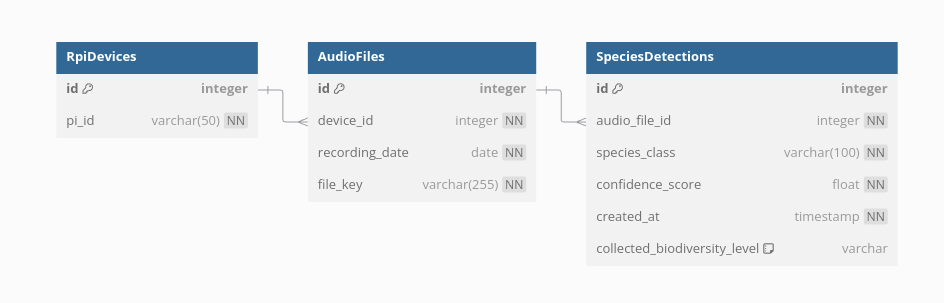

Biodiversity Audio Inference Pipeline¶
A real-time audio monitoring and species detection system for biodiversity research using deep learning models and Raspberry Pi devices.
Overview¶
This pipeline processes audio recordings from field-deployed Raspberry Pi devices to automatically detect and classify bird species and other wildlife sounds. It uses a pre-trained deep learning model to analyze audio spectrograms and identify species with confidence scores.

Architecture¶
Core Components¶
- Audio Processing: Real-time audio file monitoring and processing using librosa
- Deep Learning Model: Attention-based neural network for species classification
- Database: SQLite database for storing detections, audio metadata, and device information
- File Monitoring: Watchdog-based file system monitoring for automatic processing
- Docker Support: Containerized deployment for development and production
Model Architecture¶
The system uses an AttModel class that combines:
- Backbone: Pre-trained vision models (configurable via timm)
- Mel-spectrogram extraction: Audio preprocessing with configurable parameters
- Attention mechanisms: For temporal and frequency domain feature learning
- Classification head: Multi-class species prediction with confidence scoring
Project Structure¶
inference-pipeline/
├── app-data/ # Database files
├── audio-data/ # Input audio recordings
├── docker/ # Docker configuration files
├── json-output/ # Prediction results and reports
├── logs/ # Application logs
├── monsoon_biodiversity_common/ # Core library modules
│ ├── config.py # Model and system configuration
│ ├── dataset.py # Data loading and preprocessing
│ ├── db_model.py # Database models and schema
│ ├── model.py # Neural network architecture
│ └── requirements.txt # Core dependencies
├── scripts/ # Utility and deployment scripts
├── src/ # Main application source code
│ ├── debug_audio_monitoring.py # Real-time audio monitoring
│ ├── debug_process_detections.py # Detection processing and reporting
│ ├── inference_station.py # Station-specific inference
│ ├── query.py # Database query utilities
│ └── species_mapping.py # Species classification mapping
├── weights/ # Pre-trained model weights
└── requirements.txt # Main project dependencies
Quick Start¶
Prerequisites¶
- Python 3.8+
- Docker (optional, for containerized deployment)
- Audio processing libraries (librosa, torchaudio)
- Deep learning framework (PyTorch)
Installation¶
- Clone the repository This one is already clone at iNET (server4 machine)
bash
git clone <repository-url>
cd inference-pipeline
git submodule update --init --recursive
-
Download model weights The weights are already uploaded to the iNET and attached to the drive as well
-
Place
soundscape-model.ptfile in theweights/directory - sound-scape.pt = sound classification model
- xgboost-model.pkl = score prediction model
-
Ensure the model architecture matches the configuration in
monsoon_biodiversity_common/config.py -
Setup database
bash # The database will be automatically initialized on first run python src/debug_audio_monitoring.py
Docker Deployment¶
-
Build production image
bash ./scripts/build_prod_image.sh -
Run with docker-compose
bash cd docker docker-compose -f docker-compose-devel.yaml up -d -
Access container
bash docker exec -it dev-bio-diversity bash -
Run script
bash sh run.shit will run the audio-monitoring.py and process_detection.py and the intention of those python script will be explained below session
Configuration¶
Database¶
This is how the conceptual diagram works inside the inference data accepting

Model Configuration¶
Edit monsoon_biodiversity_common/config.py to customize:
- Audio parameters: Sample rate, mel bands, FFT settings
- Model architecture: Backbone model, number of classes
- Training settings: Learning rate, batch size, epochs
Usage¶
Real-time Audio Monitoring¶
Start the audio monitoring service:
python src/audio_monitoring.py
This service: - Monitors audio directories for new files - Processes audio files through the species detection model - Stores results in the database - Generates real-time logs
Batch Processing¶
Process existing audio files:
python src/inference_station.py
Query Results¶
Query detection results from the database:
python src/query.py
Daily Reports¶
Generate daily detection summaries:
python src/debug_process_detections.py --schedule
Database Schema¶
Core Tables¶
- RpiDevices: Device information and metadata
- AudioFiles: Audio file records and metadata
- SpeciesDetections: Detection results with confidence scores
Query Examples¶
from src.query import query_species_by_device_and_dates
# Query detections for specific device and dates
results = query_species_by_device_and_dates(
engine,
"RPiID-0000000081519079",
["2025-04-23", "2025-04-22"]
)
Output Formats¶
Detection Results¶
Species detections are stored with: - Audio file reference - Species classification - Confidence score - Temporal segment information - Device and timestamp metadata
Log Files¶
audio_inference.log: Real-time processing logsbatch_audio_inference.log: Batch processing logsdaily_report.log: Daily summary reports
Troubleshooting¶
Common Issues¶
- Model weights not found
- Ensure
soundscape-model.ptis in theweights/directory -
Check file permissions and paths
-
Audio directory not accessible
- Verify audio data directory exists and is readable
-
Check Docker volume mounts if using containers
-
Database connection errors
- Ensure SQLite database directory is writable
- Check database file permissions